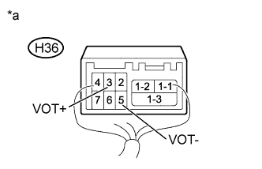

G-BOOK SYSTEM > Received Voice Signal Circuit |
| 1.CHECK HARNESS AND CONNECTOR (DISPLAY AND NAVIGATION MODULE DISPLAY - TELEMATICS TRANSCEIVER) |
Disconnect the H35 display and navigation module display connector.
Disconnect the H36 telematics transceiver connector.
Measure the resistance according to the value(s) in the table below.
| Tester Connection | Condition | Specified Condition |
| H35-7 (VOR+) - H36-3 (VOT+) | Always | Below 1 Ω |
| H35-6 (VOR-) - H36-5 (VOT-) | Always | Below 1 Ω |
| H35-7 (VOR+) - Body ground | Always | 10 kΩ or higher |
| H35-6 (VOR-) - Body ground | Always | 10 kΩ or higher |
|
| ||||
| OK | |
| 2.CHECK TELEMATICS TRANSCEIVER |
|  |
Check the waveforms according to the value(s) in the table below.
| Tester Connection | Condition | Specified Condition |
| H36-3 (VOT+) - Body ground | Receiving call using operator service | Waveform synchronized with received voice is output |
| H36-5 (VOT-) - Body ground | Receiving call using operator service | Waveform synchronized with received voice is output |
| *a | Component with harness connected (Telematics Transceiver) |
|
| ||||
| OK | ||
| ||